Main Characters
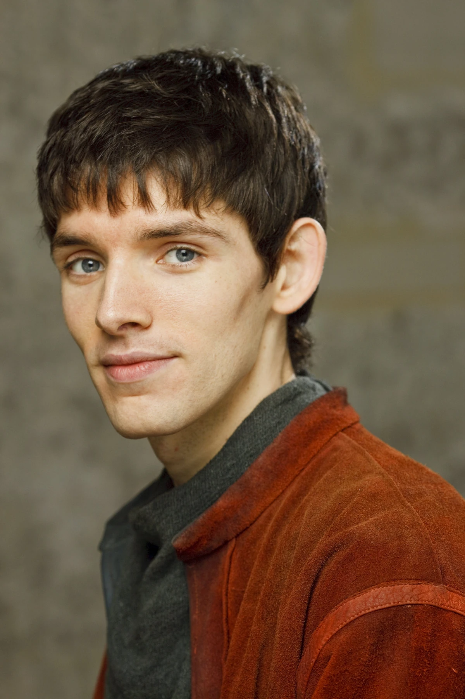
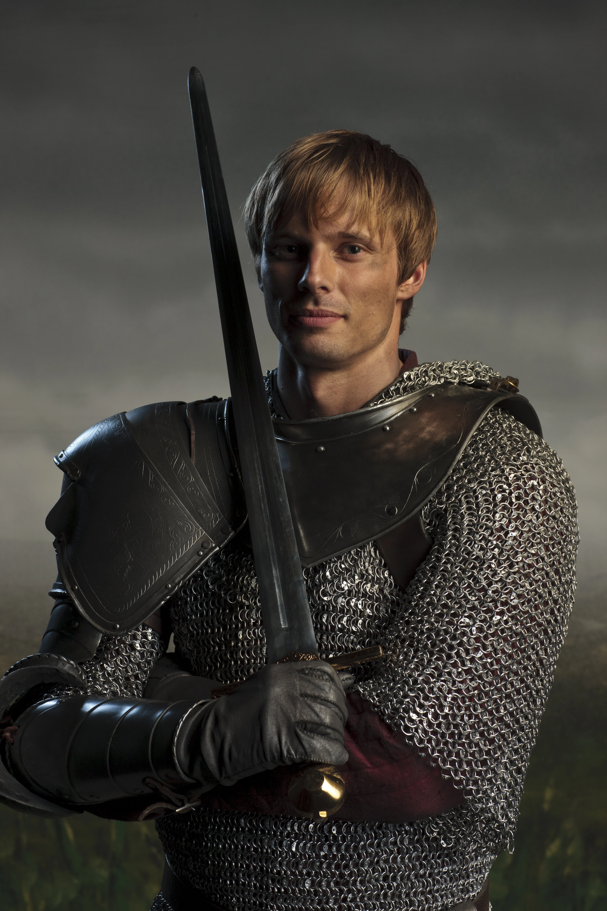
 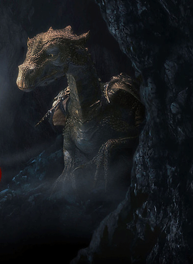
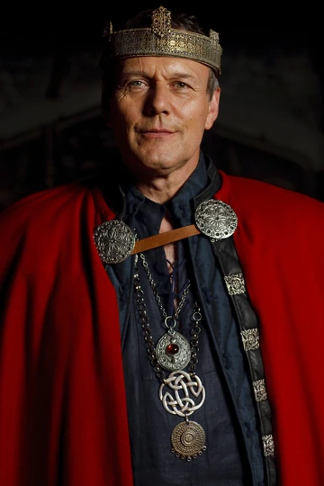
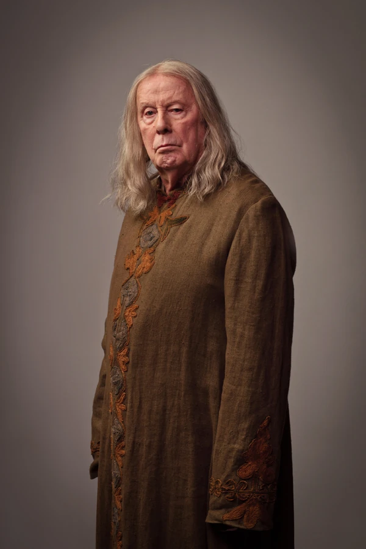
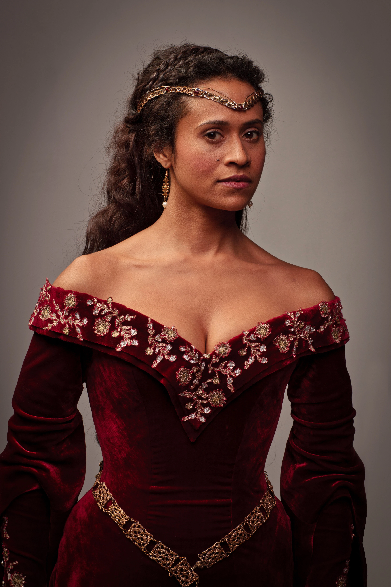
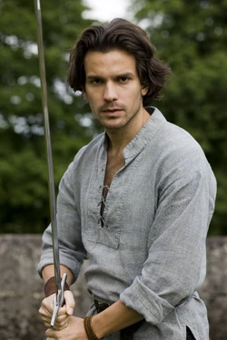
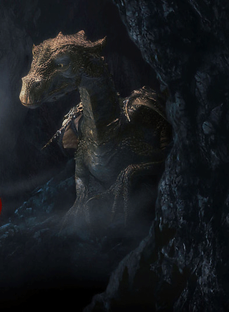
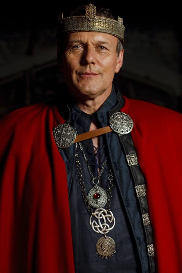
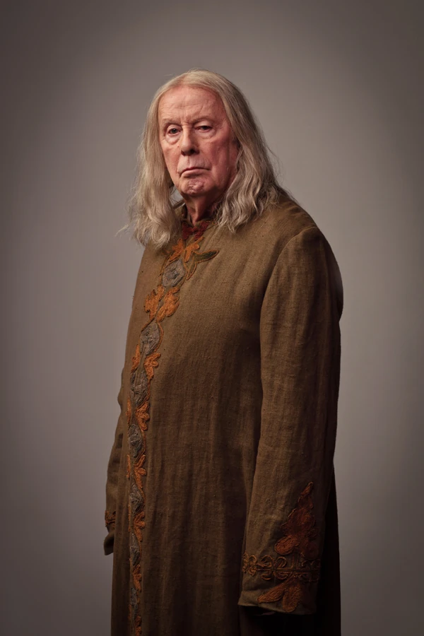
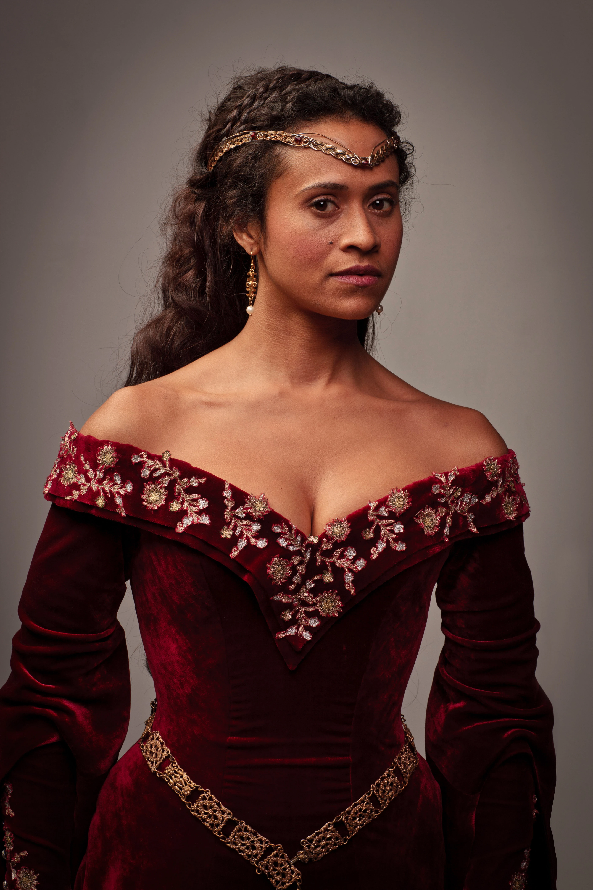
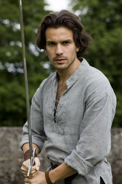
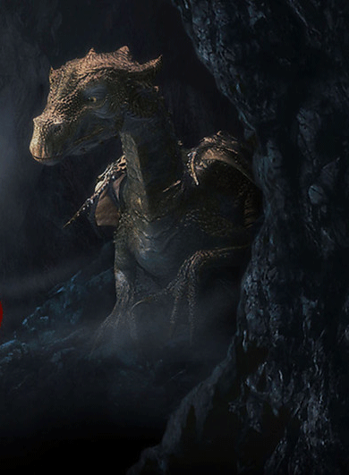
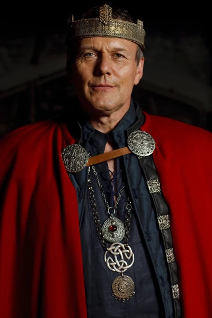
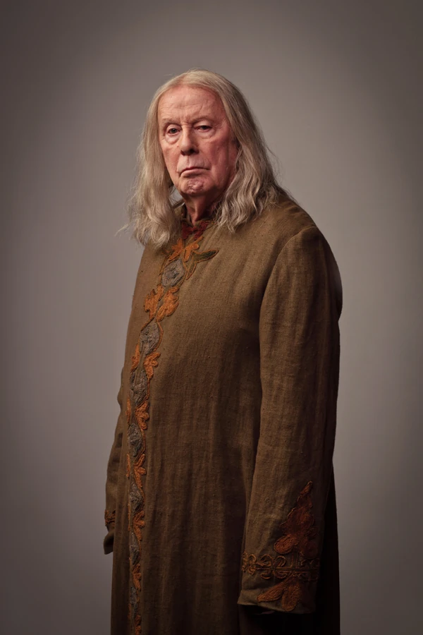
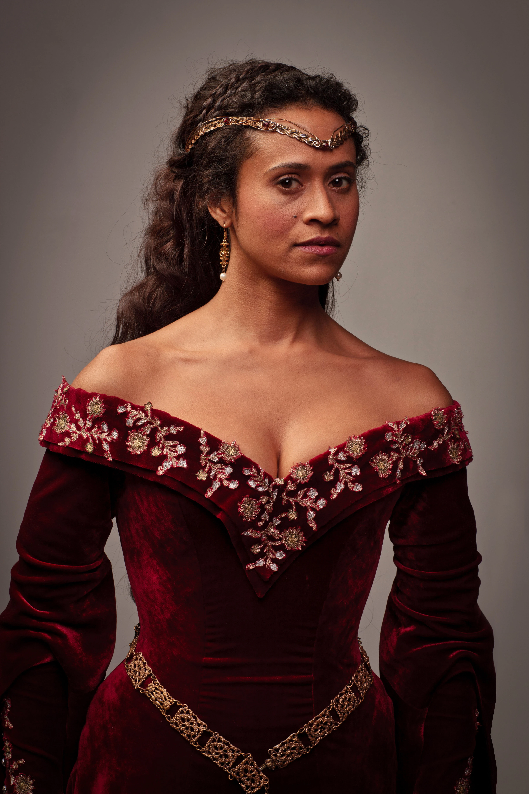
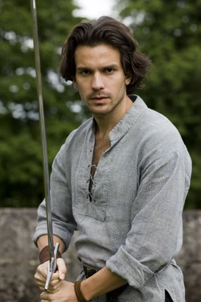
Merlin
Merlin is a British fantasy-adventure television series that aired from 2008 to 2012. The show is a reimagining of Arthurian legends, focusing on the relationship between a young Merlin and Prince Arthur, before they become the legendary wizard and king of Camelot.
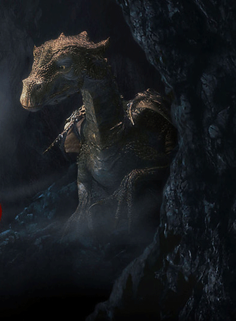
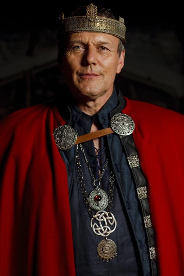
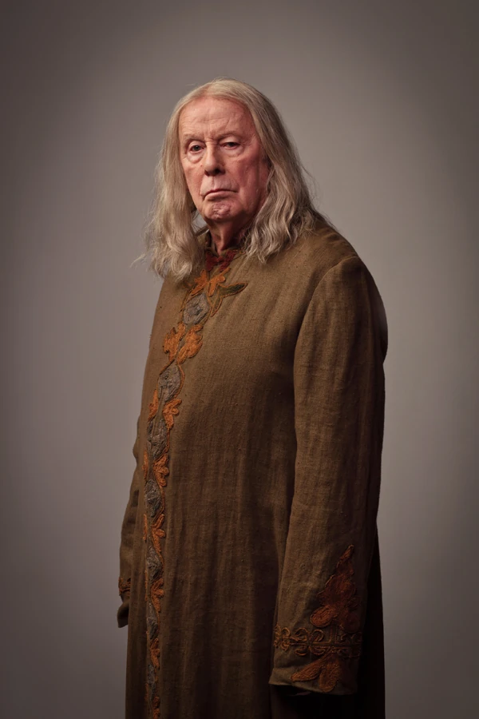
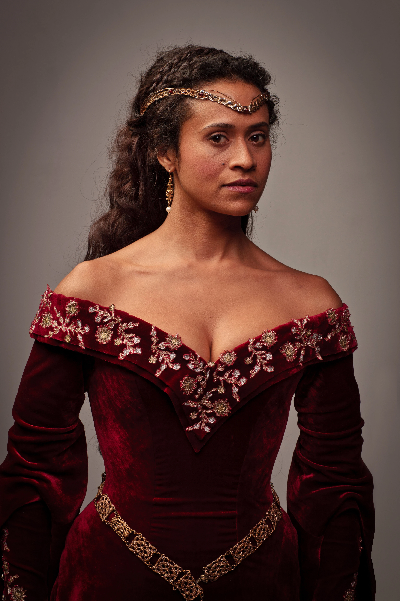
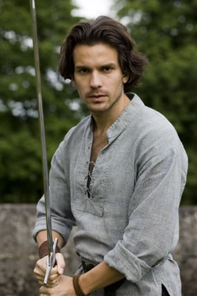